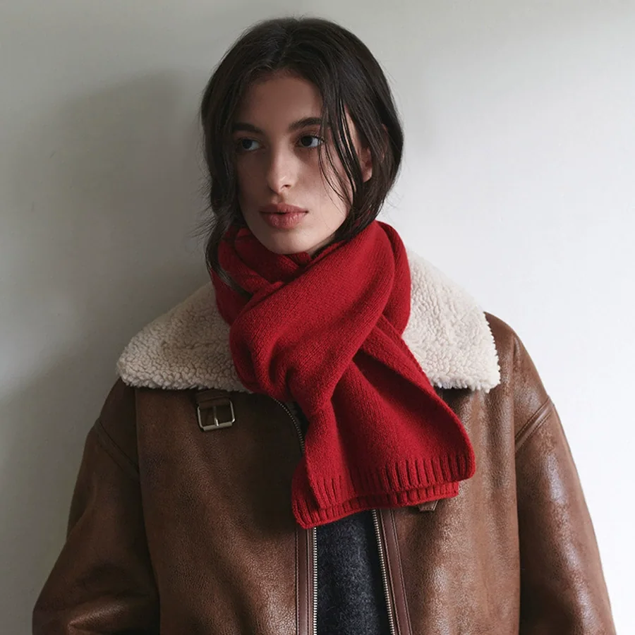

Mossyloom / The Colour Studio
Make room
for colour.
Small layers.
A brighter everyday.
A study in good combinations.

01 / Colour, your way
Pick your palette.
Start with a shade.
See where it takes you.

STUDY / 04A colour worth repeating
Red.
Ready.
Go.
That one bright thing
you reach for again.
02 / The finishing touches
Little things.
Big mood.
03 / Your next good combination